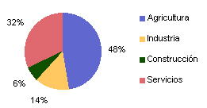
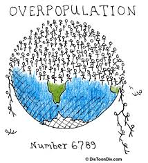

En esa epoca no existian avances tecnologicos como el telefono.
2
¿Segun la economia clasica en que se basa la riqueza de un pais?
Antes de la economia clasica la riqueza se definía con la tesorería del rey o
del estado.
3
¿La economia clasica desarrollo su propia teoria del?
Es una teoría que considera que el valor de un bien o servicio depende de la cantidad de trabajo que lleva incorporado.
4
John Stuart Mill apuntaba a una clara diferencia entre dos funciones del mercado.¿estas son ?
El mercado puede ser eficiente en la asignación de recursos pero no en la distribución de ingresos,Por lo que es necesario que la sociedad intervenga (redistribución de rentas)
5
¿Segun Thomas Robert cual es la principal razon de la disminucion de los salarios?
6
Seleccione la imagen que se relacione con el concepto PNB(Producto Nacional Bruto):

7
¿Cual de las siguientes imagenes aparece en la presentacion
haciendo referencia a la sobrepoblacion?

8
¿Es uno de los creadores de la economia clasica?